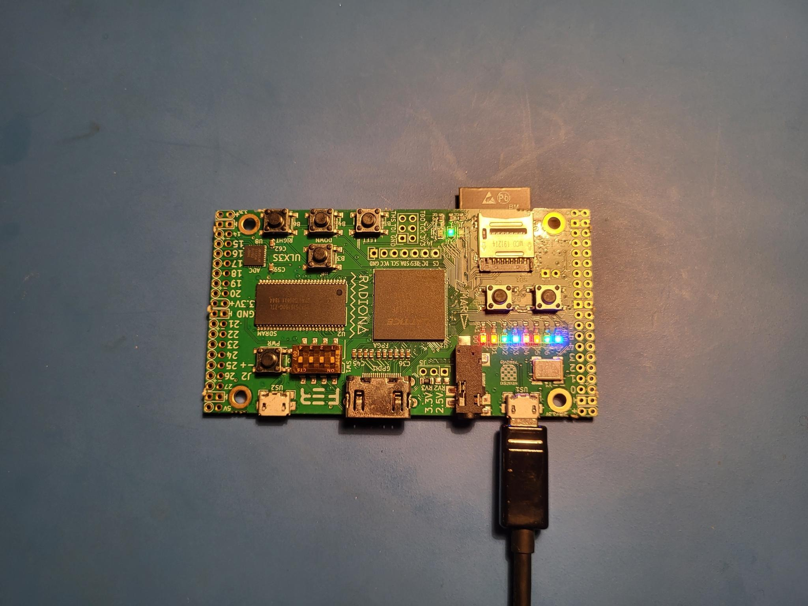

FPGA design for Software Engineers - Build System Updates, ECP5 Support
Jeff DeWall 6 min read November 14, 2022 #FPGAIt's been a while since the last article and I've recently come back to playing with my FPGA repo. Given the amount of time that has passed there were some updates needed for the Dockerfile and a couple of improvements I wanted to make.
Article Series
- Verilog and State Machines
- Simulation and Build Tools
- Seven Segment Displays
- Docker Builds
- Build System Updates, ECP5 Support
- Time-Multiplexed Seven Segment Displays
Build System Updates
I updated the Dockerfile to use Ubuntu 22.04 as the base image, and cleaned up the package installation so that it does apt install just once rather than having it scattered around. Also thanks to @asahsieh for the PR that fixed being able to git clone from veripool without disabling SSL.
While doing this I removed a bunch of half-finished projects or ones that I haven't yet written up blog posts about yet.
Conanfile.txt No More
I recently started using conan.cmake in other CMake based projects for using conan. It removes the extra step of doing conan install .. and instead puts everything into your CMake files, which is nice. I had been using the conan_cmake_run macro, but it seems that it's now deprecated, moving towards a bit more verbose setup, but one that should be more future proof for Conan 2.0.
So now in a demo/example, you'll see a block like the following to setup the extra simulation packages:
The generator has changed to cmake_find_package, which means you now can use the standard find_package system from CMake for your dependencies, rather than the ${CONAN_LIBS_XYZ} variables that were created before.
Adding Lattice ECP5 Support
I heard about the ECP5 line of FPGAs from Lattice while keeping an eye on the TinyFPGA EX board. Unfortunately that project seems to be dead. I found another board called the ULX3S which has a few options for the size of the ECP5 you want to get, and these can have up to 84,000 LUTs versus the Ice40 on the TinyFPGA-BX which has only 8,000.
Since that gives the opportunity for doing much larger designs in the future, I wanted to add support for the ECP5 line to the build system since Yosys also has support for them.
After adding in the new tools to the Docker file, some copy/pasting and messing with a new yosys_ecp5.cmake script, You can now target the ECP5 FPGAs as well as the Ice40 FPGAs.
To handle this, it made sense to move away from the fpga_project macro that did both the simulation and synthesis target setup and break it out more explicitly for each project. This is because you will need a different top-level verilog for each FPGA you target, so rather than going crazy with parameters to the fpga_project macro, I just split it out into different target calls.
You can see the 00_blinky example for how this will look for supporting both ECP5 and Ice40 flows. Its CMakeLists.txt file now looke like:
# Include our cmake script that defines an fpga_project macro
# Does setup, finding verilator and setting up conan.cmake macros.
Notice that here I've shown creating separate simulation targets for the ECP5 and the Ice40 versions. As I work through other examples, I will instead have the actual logic in a main verilog file and separate top level verilog files that just map the board pins into the design.
With ECP5, there is a different pin constraint file format used, called .lpf, and I've moved the Ice40 one and it into the support/ folder and renamed them to match the board they go with.
Uploading a Design to the ULX3S
Looking at the manual from ULX3S, I ended up cloning the fujprog repo and building it from source. It was really fast and worked out of the box without issues. I also tried openFPGALoader but it failed to upload the bitstream right away and I haven't investigated it any further so far.
Blinky Updates
For 00_blinky on the ULX3S, since there are 8 LEDs available, I map a larger part of the counter to the LEDs. I also added a check for the second user button being down to pause the counter.
State Machine Updates
01_state_machine has been updated so that the state machine itself is contained in its own state_machine.v module. The Ice40 and ECP5 top level modules then just do the mapping of their pins into that module.
One nice benefit of this setup is that the state_machine module can be parameterized for simulation by default, and then overriden in the board specfic top-level modules, removing the need for the `ifdef SIMULATION blocks from before.
For the ECP5 version, the state machine LED is mapped to all 8 of the user leds:
TestBench.h changes
In order to make the simulations for different boards work properly, I had to have a way to cycle the clock pin for each board, but they are named differently depending on the board.
Since that had always been a bit hacky anyways, I reworked the TestBench template class to expect to be subclassed to provide a setClock method. This lets us refer to CLK on a TinyFPGA-BX and to i_clk on the ULX3S.
I looked at different ways to handle this with template magic - thinking maybe passing a reference to the clock signals member from the verilated module would work. The problem ended up being that the signals are implemented as references in the verilated module, and it turns out you can't have a pointer to a member that is a reference, so that approach ended up not working.
So now instead of creating a pointer to your testbench module like this:
int
You instead subclass the Testbench template like this:
;
int
Conclusion
Now with the build system cleaned up and able to target different FPGAs and boards more easily, I'm looking forward to cleaning up and finally releasing the multiple seven segment display article I talked about two years ago.